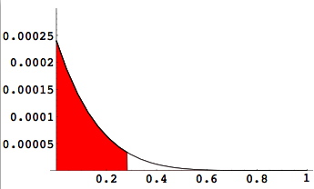
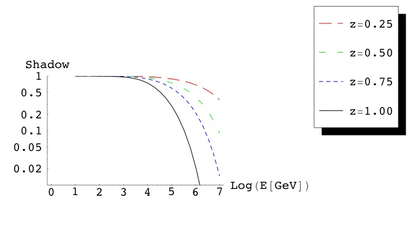
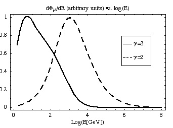
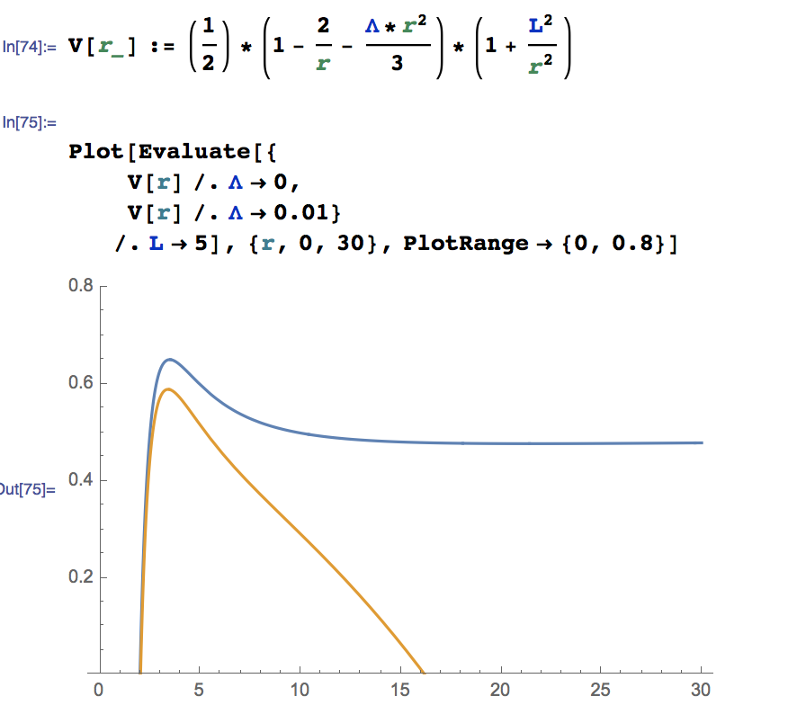

Mathematica
Mathematica will not open on my mac.
Try this to reset the Mathematica Library:
mv ~/Library/Mathematica/ ~/Desktop/
Examples:
Fractional Derivatives
Translation Operator
Magnetic dipole gradients
Basics
defining a function: f[x_] := x + x^2;
implicit derivative:
a[t_] := (c/G)*(J[t]/M[t]^2);
D[a[t], t]
comments: (* This will be commented out. *)
Are two expressions equivalent? Try
Simplify[y1[t]-y2[t]]
or ...
Simplify[y1[t]/y2[t]]
Data and Arrays
To read in data from a file and make a histogram:
<< Graphics`MultipleListPlot`
<< Graphics`Graphics`
Data = ReadList["~ethrane/example.data", Number];
Histogram[Data, HistogramRange -> {-1, 5}]
To read in a an array of data from a file:
data = ReadList["~ethrane/test.dat", {Number, Number}]
To refer to entries in an array: y=data[[1,3]]
To interpolate between datapoints: p=Interpolation[data];
data is an array of the form, {{x1,f(x1)}...{xN,f(xN)}.
The spline is by default cubic.
p is now a function of x: you can plot it, or find p[13.2], etc.
You probably don't need to mess around with "Spline" or "ListInterpolation".
To do a linear spline: p=Interpolation[data,InterpolationOrder->1]
(This can be handy when the slope is large and a cubic spline gives an ugly interpolation.)
To define an empty array: flux = Array[0, {40,2}]
The array name is "flux" and it has 40 entries each with 2 sub-entries.
To write/export data to a file:
Export["/Users/ethrane/Documents/Thesis/prob.dat", Prob];
"Prob" is a (previously defined) array of numbers and "CSV" is one of the formats supported by Mathematica.
To carry out a C++ style for-loop:
For[x=1,x<=10, x++,
Prob[[x]] = y[Chi[[x]]];
]
Note: Mathematica arrays start at 1, not 0.
Also: arrays are referred to with a weird double bracket notation.
And finally: the syntax is similar to C++, but not the same.
Plotting
<< Graphics`Graphics`
Log Plot (logarithmic y-axis): LogPlot[f,{x,xmin,xmax}]
Log-Linear Plot (logarithmic x-axis): LogLinearPlot[...]
Log-Log Plot: LogLogPlot[...]
(You can also have LogLinearListPlot, etc.)
To add a title (or label) to a plot: PlotLabel -> "E=1 PeV"
To save/export an image as an .eps file: Edit > Save Selection As
Plotting Examples
To make a shaded plot like this:

To plot several things at once (multiple plot) with a legend:

To make a plot for publication:

Does anyone know, by the way, how to control the thickness of trendlines in the legend? If you need to modify them, you can hack the .eps file by searching for the string ".0075 w" (or something like it.) Try replacing it with "0.1 w".
Kernel
To run a Mathematica script (.m file) from the UNIX command line:
First: put this in your .bashrc file: math () { /Applications/Mathematica\ 5.1.app/Contents/MacOS/MathKernel ; }
Then: math < script.m
Or: math < script.m | math.pl (to print only output lines in C++ style scientific notation.)
To put a comment in a .m script: (* comment *)
To make functions in your .m file (mytest.m) available as a package:
Put mytest.m file in ~/Library/Mathematica/Applications/ (case 1)
Or put it in a subdirectory, e.g.: ~/Library/Mathematica/Applications/testing/ (case 2)
Include like so:
<<mytest` (case 1)
<<testing`mytest` (case 2)
Other
To load a package:
<< Graphics`Graphics` (Will reload the package every time the notebook is evaluated.)
Needs["Graphics`Graphics`"] (Will load the package the first time the notebook is evaluated.)
To clear memory: ClearAll["Global`*"]
To generate a random number: Random[]
To access the usage information for a function, mytest: ?mytest
To open the graphical formatting palette: File > Palettes > Basic Typesetting
More Advanced
Integration with assumptions:
Integrate[(1 - 2 G*M/r)^-1, {r, a, b},
Assumptions -> {Im[a] == 0, Im[b] == 0, Im[G] == 0, Im[M] == 0, b > a}]
Plotting multiple curves with assumptions:
In this example, we assume different values of Lambda for each curve, but the same value of L.

Back to Resources